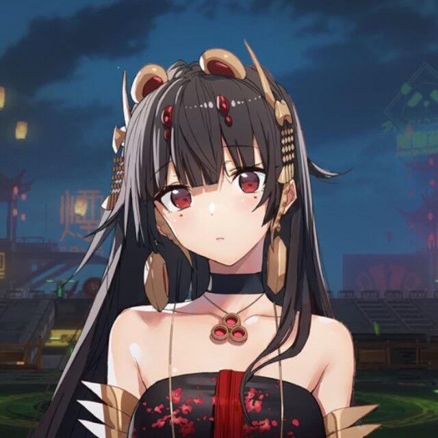

Hello!
It's Funnyzhan
简短的自我介绍
我是金佳汶，Funnyzhan是我从初中用到现在的网名，其实当初是打错了，本来是Funnythan，但是懒惰使得他一直沿用至今。作为一个长期在摸鱼的人，性格比较随和，没什么特长，但喜欢和朋友们聊天，打游戏。
在大学接下来的时间里，打算加强自己的专业技能，也能结合去做和自己兴趣相关的事。
最希望能实现的事情是能够有时间静下心来好好去做一件事、打磨一件作品。